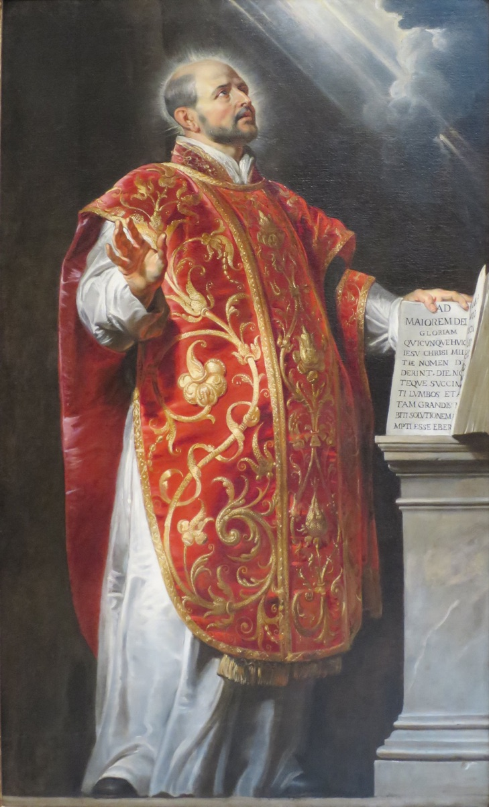

Utemeljitelji i rano razdoblje reda
Osnivač Družbe Isusove
Sv. Ignacije Loyolski
1491. – 1556.
Od vojničkoga života do molitve i razlučivanja: Ignacije je utemeljio Družbu Isusovu. Njegove Duhovne vježbe nastale su iz osobnog obraćenja i postale put duhovne priprave za mnoge naraštaje.

Izvor slike
- Spomendan
- 31. srpnja
- Zaštitništvo
- Duhovne vježbe · Duhovne obnove
- Životni vijek
- 1491. – 1556.
- Djelovanje
- Pisanje, znanost i umjetnost · Duhovno vodstvo i razlučivanje · Obraćenje i novi počeci · Bolest i osobne kušnje
- Razdoblje
- 15., 16. stoljeće
- Rodno ime
- Iñigo López de Oñaz y Loyola
- Rođenje — dostupni podaci
- 1491.; dan i mjesec nisu potvrđeni u provjerenim izvorima.
- Mjesto rođenja
- Loyola, Azpeitia, Baskija, Španjolska
- Datum smrti
- 31.07.1556.
- Mjesto smrti/mučeništva
- Rim, Italija
- Okolnosti smrti/mučeništva
- Umro nakon dugotrajnih zdravstvenih tegoba; nije mučenik.
- Uloga
- Osnivač Družbe Isusove
- Mučenik
- Ne
- Ostale oznake
- Osnivač i prvi general Družbe Isusove; autor Duhovnih vježbi
- Pripadnost
- Isusovac
- Drugi oblici imena
- Ignacije Lojolski · Ignatius of Loyola · Ignatius · Ignacije Loyola · Iñigo López de Loyola
Životopis
Sveti Ignacije Lojolski nije započeo život kao povučeni učenjak ni redovnik, nego kao baskijski plemić zaljubljen u vitešku slavu. Teška rana zaustavila je njegov vojnički put, a dugi oporavak otvorio mu je prostor u kojemu je počeo opažati kako različite želje djeluju na ljudsko srce. Iz toga iskustva izrasli su „Duhovne vježbe”, ignacijevsko razlučivanje i Družba Isusova, red koji je osobnu molitvu povezao s obrazovanjem, misijama i raspoloživošću za služenje Crkvi.
Rodio se 1491. u dvorcu Loyola u baskijskoj pokrajini Gipuzkoi kao Íñigo López de Oñaz y Loyola. Bio je najmlađi sin plemićke obitelji i rano je ostao bez majke. Kao mladić živio je na dvoru Juana Velázqueza de Cuéllara, visokoga službenika Kastiljskoga kraljevstva. Naučio je ponašanje dvorskoga čovjeka, mačevanje i vojničke vještine. Privlačili su ga odjeća, ples, viteške pripovijesti, čast i pustolovina. Njegova snažna volja tada još nije bila usmjerena prema Bogu, ali će upravo ta odlučnost poslije postati važnim dijelom njegova služenja.
Godine 1521. sudjelovao je u obrani Pamplone. Kada su drugi smatrali da se grad treba predati nadmoćnoj francuskoj vojsci, Íñigo je poticao na otpor. Topovsko tane teško mu je ozlijedilo jednu nogu i ranilo drugu. Francuzi su se prema njemu ponijeli časno i dopustili da ga prenesu u Loyolu. Liječenje je bilo dugo i bolno, a Íñigo je pristao i na dodatne zahvate jer nije htio da mu noga ostane izobličena. Ambicija viteza bila je još živa, ali upravo će ga tjelesna nemoć prisiliti da zastane.
Za vrijeme oporavka tražio je viteške romane. U kući su se našli samo Kristov život i zbirka životopisa svetaca. Čitajući, naizmjenično je maštao o dvorskoj slavi i o djelima svetoga Franje, Dominika i drugih Božjih ljudi. Počeo je primjećivati važnu razliku: viteške su ga sanjarije kratko zanosile, a poslije ostavljale praznim; misao da nasljeduje svece ostavljala je trajniju radost i mir. U tome je prepoznao prve obrise razlučivanja duhova. Nije svaka snažna želja Božji poziv; njezinu vrijednost otkrivaju plodovi koje ostavlja u čovjeku.
Nakon oporavka krenuo je kao hodočasnik. U benediktinskom svetištu Montserrat 1522. obavio je životnu ispovijed, darovao svoju raskošnu odjeću siromahu i tijekom noćnoga bdjenja položio mač pred Gospin oltar. Taj čin označio je prekid sa starim idealom viteza koji traži vlastitu čast. Íñigo je želio postati Kristov hodočasnik, premda još nije razumio koliko će i njegovu novu revnost trebati pročistiti.
U Manresi je proveo približno jedanaest mjeseci. Živio je siromašno, služio u bolnici, molio u špilji i podvrgavao se strogim pokorama. Razdoblja velikih duhovnih utjeha izmjenjivala su se sa sumnjama, tjeskobom i skrupulama. Učio je da pretjerana pokora može biti jednako neuredna kao i svjetovna ambicija te da Bog čovjeka ne vodi prisilom i očajem. Uz rijeku Cardoner doživio je duboko prosvjetljenje koje mu je, prema njegovu svjedočanstvu, dalo novo razumijevanje vjere, stvaranja i Božjega djelovanja. Bilješke iz toga razdoblja postale su jezgra „Duhovnih vježbi”.
„Duhovne vježbe” nisu knjiga za obično čitanje ni zbirka pobožnih misli. Zamišljene su kao vođeni put molitve u kojemu čovjek promatra vlastiti život pred Bogom, suočava se s grijehom, razmatra Kristov život, muku i uskrsnuće te donosi odluke u većoj slobodi. Ignacije razlikuje duhovnu utjehu i pustoš, upozorava na samoobmanu i uči da se ljubav pokazuje djelima. Cilj vježbi nije da voditelj izabere umjesto druge osobe, nego da joj pomogne tražiti i pronaći Božju volju.
Godine 1523. hodočastio je u Svetu zemlju s namjerom da ondje trajno ostane i pomaže dušama. Franjevački poglavari, odgovorni za sigurnost hodočasnika, nisu mu to dopustili. Ignacije je poslušao i vratio se u Europu. Taj neuspjeh pokazao se važnim: postupno je učio da sveta namjera nije dovoljna ako čovjek odbija okolnosti kroz koje mu Bog govori i crkvenu vlast koja razlučuje njegovo poslanje.
Shvatio je da za poučavanje drugih mora steći ozbiljno obrazovanje. Kao odrastao čovjek sjeo je među mlađe učenike kako bi učio latinski. Studirao je u Barceloni, Alcalá de Henaresu i Salamanci. Njegovi razgovori o vjeri privlačili su slušatelje, ali su izazivali i sumnju vlasti jer još nije imao završeno teološko obrazovanje. Više je puta ispitivan i kratko zadržavan. Nije osuđen zbog krivovjerja, ali mu je postalo jasno da apostolska gorljivost mora biti povezana s učenjem, crkvenim razlučivanjem i strpljivošću.
Godine 1528. stigao je u Pariz. Na Sveučilištu u Parizu završio je filozofske studije i stekao naslov magistra. Ondje je dijelio sobu s Petrom Faberom i Franjom Ksaverskim. Njima i drugim studentima davao je „Duhovne vježbe”, a oko njega se oblikovala skupina prijatelja u Gospodinu. Uz Fabera i Ksaverskoga pridružili su mu se Diego Laynez, Alfonso Salmerón, Nicolás Bobadilla i Simão Rodrigues. Dana 15. kolovoza 1534. u kapelici na Montmartreu položili su zavjete siromaštva i čistoće te obećali poći u Svetu zemlju ili se, ako put ne bude moguć, staviti papi na raspolaganje.
Ignacije je 1537. zaređen za svećenika. Zbog rata putovanje u Svetu zemlju nije bilo moguće, pa su drugovi krenuli prema Rimu. U kapelici u La Storti Ignacije je doživio mistično iskustvo u kojemu je osjetio da ga Otac pridružuje Kristu koji nosi križ. To mu je potvrdilo da njihovo mjesto služenja nije ono koje su sami prvotno zamislili, nego poslanje koje će primiti u Crkvi. U Rimu su se stavili na raspolaganje papi Pavlu III.
Skupina je raspravljala može li ostati trajno povezana dok članovi odlaze na različita poslanja. Odlučili su osnovati novi red, Družbu Isusovu. Papa Pavao III. potvrdio ju je bulom „Regimini militantis Ecclesiae” 27. rujna 1540. Ignacije je sljedeće godine izabran za prvoga vrhovnog poglavara. Naziv Družbe nije trebao isticati članove, nego njihovu želju da budu suborci i sluge pod Kristovim imenom.
Uz uobičajene redovničke zavjete siromaštva, čistoće i poslušnosti, potpuno formirani članovi Družbe polagali su posebni zavjet raspoloživosti papi za misijska poslanja. Poslušnost kod Ignacija nije trebala uništiti razum, savjest ni osobnu odgovornost. Član reda trebao je proći ozbiljno razlučivanje i odgoj kako bi svoje sposobnosti mogao staviti u službu zajedničkoga poslanja. Geslo koje sažima ignacijevski smjer glasi „Ad maiorem Dei gloriam” — „Na veću slavu Božju”.
Kao general reda Ignacije više nije putovao poput hodočasnika iz mladosti. Iz skromnih prostorija u Rimu vodio je zajednicu koja se brzo širila. Pisao je tisuće pisama, primao izvještaje, slao ljude u misije i desetak godina radio na Konstitucijama Družbe Isusove. Franjo Ksaverski otišao je prema Indiji i Dalekom istoku, Petar Faber djelovao je u Europi, a drugi su drugovi služili na crkvenim saborima, u propovijedanju i duhovnoj obnovi.
Obrazovanje je ubrzo postalo jedno od prepoznatljivih poslanja Družbe. Isusovci su osnivali kolegije i sjemeništa jer je Ignacije razumio da se obnova Crkve ne može osloniti samo na povremeni zanos. Potrebni su dobro oblikovani svećenici i laici, sposobni povezati vjeru, znanje i odgovornost za zajednicu. Kolegij u Messini postao je važan uzor, a u Rimu su nastale ustanove koje će prerasti u Rimski kolegij i druge trajne obrazovne projekte.
Ignacije je istodobno poticao djela milosrđa. U Rimu je pomagao siromašnima, bolesnima i ženama koje su željele napustiti prostituciju. Brinuo se za katekumene i ljude zahvaćene društvenim posljedicama gladi i bolesti. Njegova duhovnost nije zatvarala čovjeka u promatranje vlastitih osjećaja. Razlučivanje je vodilo odluci, a odluka služenju. Poziv „tražiti Boga u svemu” značio je otkrivati Božje djelovanje u molitvi, učenju, odnosima, radu i konkretnim potrebama bližnjih.
Zdravlje mu je godinama bilo narušeno. Umro je u Rimu 31. srpnja 1556., bez velike javne svečanosti. U trenutku njegove smrti Družba je imala približno tisuću članova i djelovala na više kontinenata. Pokopan je u Rimu, a njegovi se posmrtni ostatci danas časte u crkvi Presvetoga Imena Isusova, poznatoj kao Il Gesù.
Papa Pavao V. proglasio ga je blaženim 1609., a papa Grgur XV. svetim 12. ožujka 1622., zajedno s Franjom Ksaverskim, Terezijom Avilskom, Filipom Nerijem i Izidorom Ratarom. Papa Pio XI. proglasio ga je 1922. zaštitnikom duhovnih vježbi i obnova. Spomendan svetoga Ignacija Lojolskoga slavi se 31. srpnja.
Ignacijeva trajna važnost nije samo u ustanovi koju je osnovao. Ostavio je Crkvi praktičnu školu slobode: čovjek pozorno promatra nutarnje pokrete, provjerava njihove plodove, sluša Božju riječ, savjetuje se i donosi odluku koju zatim vjerno provodi. Njegov put od viteškoga sna do služenja pokazuje da milost ne briše ljudsku osobnost, nego je preobražava. Vojnička odlučnost postala je apostolska raspoloživost, želja za slavom čežnja za većom slavom Božjom, a osobni plan spremnost da bude poslan onamo gdje je služenje najpotrebnije.
Pročitaj više na izvornoj stranici ↗
Molitve i dodatni sadržaji
Misli
Tako se uzdaj u Boga, kao da sav uspjeh ovisi jedino o tebi, a nimalo o Bogu; no, tako se laćaj posla, kao da će Bog učiniti sve sam, a ti ništa.
Svojstvo je Boga i Njegovih anđela da duši, kad je okupiraju, donose istinsku sreću i duhovnu radost; i odagnati iz nje tugu i kušnje koje u njoj potakne neprijatelj.
Nekoliko duša razumije što bi Bog postigao u njima kad bi mu se bezrezervno prepustile i kad bi dopustile da ih njegova milost oblikuje u skladu s tim.
Vrlo je malo ljudi koji shvaćaju što bi Bog učinio od njih kad bi se potpuno prepustili njegovim rukama i prepustili se Njegovoj milosti.
Što je učinio za mene? On me ljubio i dao mi je cijelog sebe. Što da učinim za Njega? Voljet ću Ga i predati Mu se bez rezerve.
Ako vas Bog uzrokuje da mnogo patite, to je znak da ima velike planove za vas i da vas sigurno namjerava učiniti svecem.
Mnogo je bolje steći samo uncu sreće ne riskirajući svoje spasenje, nego sto funti riskirajući ga.
Ja sam Božja pšenica i samljet će me zubi zvijeri, da postanem čisti kruh Kristov.
Nije teško poslušati kada volimo onoga kome se pokoravamo.
Ljubav bi se trebala pokazati djelima više nego riječima.
Gospodine, nauči me da budem velikodušan.
Nauči nas davati, a ne računati cijenu.Misli svetaca